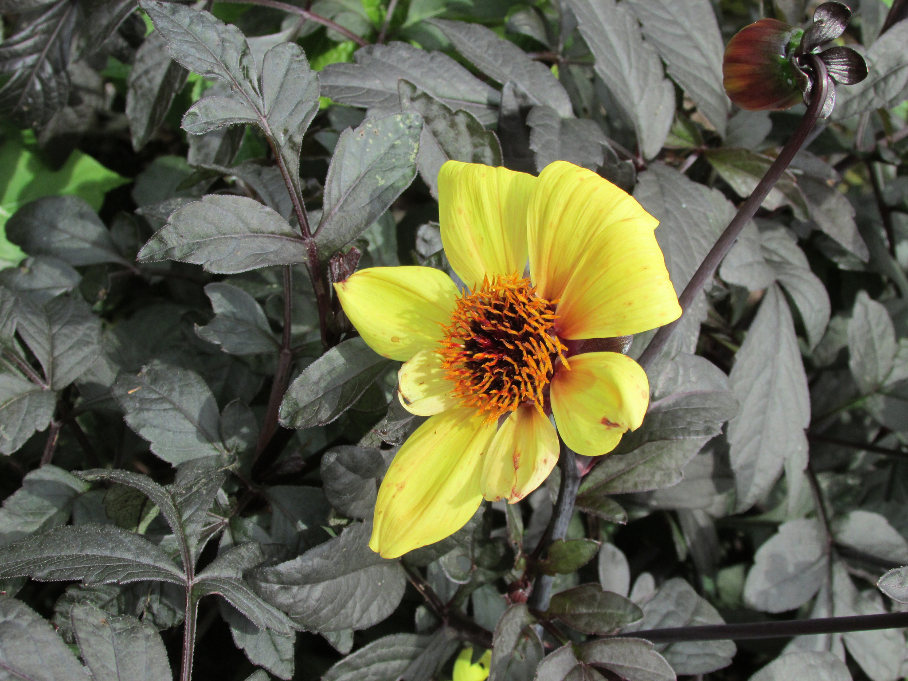
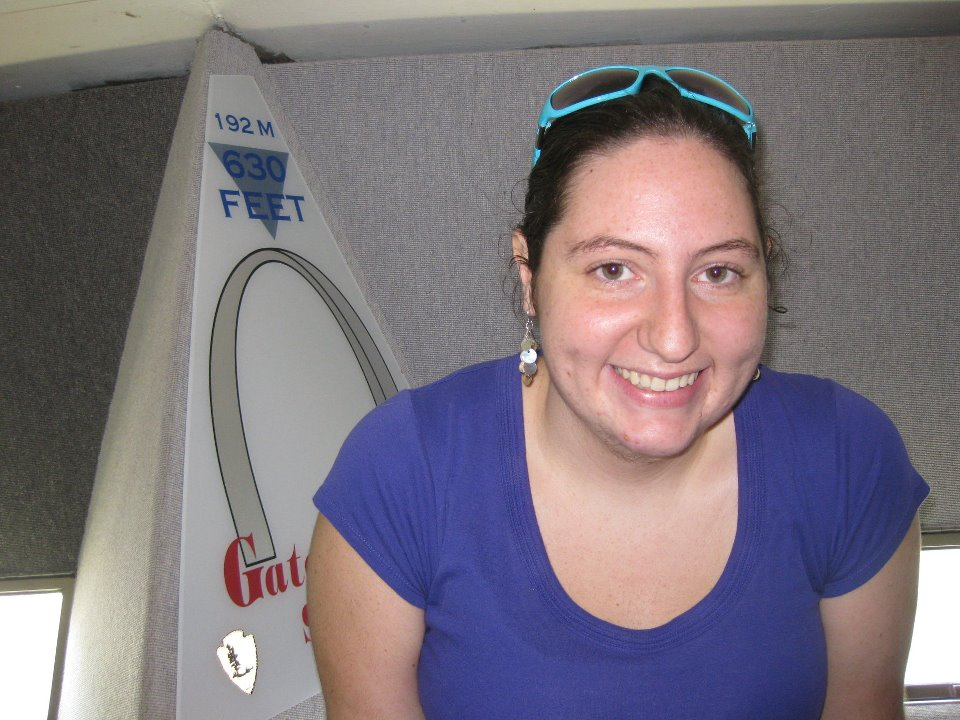
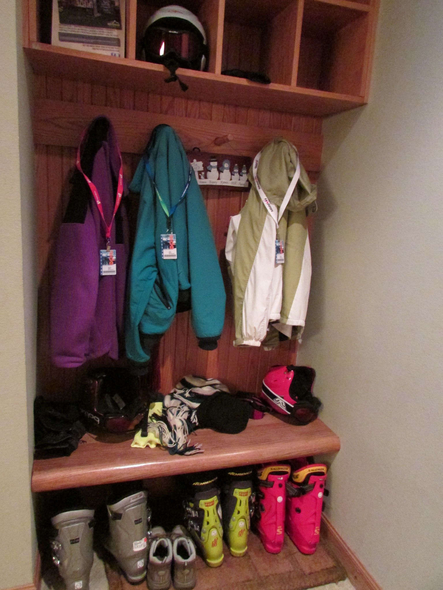

- 
- 


- 


APP, the Advising Planning Program, was my senior capstone project for my undergraduate computer science degree. The objective was to design a web application that would allow students and faculty in the College of Engineering and Computer Science at the University of Evansville to more easily navigate through the advising process. Prior to this project, the entire process was managed with paper checklists of requirements that were kept in the advisor’s office and were, at least theoretically, updated once a semester during the advising session. The final product was a semi-functional prototype of the system, which could hopefully be implemented by another student as a future project.
This project began as a proposal from my advisor, who said she wished there was a tool to help manage this process. As a student, I was interested in the project because I had seen first-hand how the broken the system was. I partnered with another student, who was going to focus on the development on the database and back end processing that would make the system work. The project was intended to be a computer science project, but I took the initiative to incorporate as many user centered design concepts as I could.
I began the process with a series of exploratory interviews with students, faculty, and department staff to make sure that I had a broader understanding of the problem than my own personal experience. I learned a great deal about the technology that made up the current system. After these interviews, I worked with my partner to distill a list of requirements that we would need to complete to make the new system work for the students and faculty.
Once I had completed the prototypes, I created an IRB approved usability study. The study looked at 10 participants, who were asked to complete a series of tasks with each interface in turn while I, as the sole researcher, watched and noted number of errors on tasks and identified pain points. As it was a within-subject test design, each participants was randomly assigned the order in which they would use each prototype to prevent system learning from affecting the results. After completing the tasks, the participants were asked to fill out a post task survey which asked them to rate various features of both prototypes and give general feedback. The tasks the final survey can be seen here.
I took the results of these tests and combined the prototypes into a final design, which can be viewed here. This prototype was used as the final product for presentation purposes, as the backend piece was never completed. For more documentation about the process, see the project website.
This project was presented twice: once at MESCON 2014 (paper) and again during Department of Electrical Engineering and Computer Science Senior Project Presentations (paper | poster). For my piece, I was awarded the Most Professionally Developed Senior Project award.